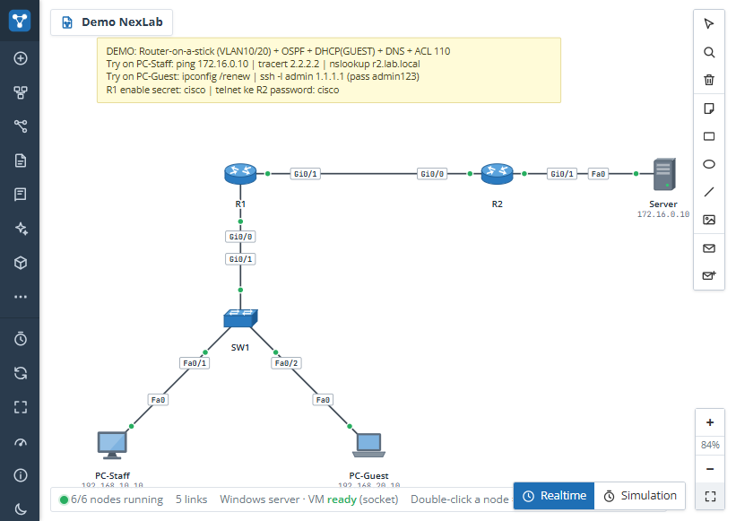

Documentasi NexLab
Gambaran Umum
NexLab adalah laboratorium jaringan interaktif berbasis web yang memungkinkan Anda merancang topologi, belajar konfigurasi, dan menjalankan simulasi jaringan langsung dari browser.
Aplikasi NexLab terdiri dari dua komponen utama:
- Frontend Web — antarmuka pengguna yang dijalankan di browser untuk merancang topologi dan mengakses console perangkat.
- Backend Engine — server Python (aiohttp) yang mengelola simulasi jaringan, console CLI, dan koneksi ke perangkat fisik.
Fitur
Desain Topologi Visual
Seret dan lepas perangkat, sambungkan port, atur VLAN, dan bangun lab sesuai ide Anda tanpa berantakan.

Console Interaktif
Akses console CLI untuk setiap perangkat (Cisco IOS, Huawei, dan lainnya) dengan dukungan mode konfigurasi dan privilege.
Simulasi Lengkap
Simulasikan routing (OSPF, BGP, RIP), switching (VLAN, STP), dan layanan jaringan lainnya dengan logika protokol yang akurat.

Marketplace Komunitas
Temukan rancangan lab siap pakai dari komunitas, atau jual rancangan Anda sendiri.
Pemetaan 3D & Instalasi Fisik
Rencanakan instalasi lapangan nyata dengan peta 3D, jalur kabel, daftar material, dan kalkulasi link budget.
Instalasi
Panduan instalasi cepat:
- Windows 10/11 — Unduh dan jalankan
NexLab-Setup-Windows.cmd, ikuti langkah verifikasi SHA-256. - macOS (Intel & Apple Silicon) — Unduh dan jalankan
NexLab-Setup-macOS.command, pilih Open saat diminta. - Linux (x86_64) — Unduh dan jalankan
NexLab-Setup-Linux.sh.
Setiap installer diunduh dari halaman download NexLab dan secara otomatis memasang aplikasi beserta shortcut. File yang diunduh adalah paket rilis yang terverifikasi, bukan kode sumber.
Setelah instalasi, jalankan NexLab dari shortcut aplikasi atau folder instalasi. Server backend akan otomatis berjalan dan membuka antarmuka di browser.
Topologi & Bridging
NexLab mendukung dua mode jaringan:
| Fitur | Simulasi | Real |
|---|---|---|
| Lingkup jaringan | 192.168.1.0/24 (virtual) | 192.168.137.0/24 (fisik host) |
| Interface utama | virbr0 (Linux/macOS) | vEthernet (Windows) / bridge0 (macOS) |
| Bridge ke host | Tidak | Ya (opsional) |
| Penggunaan | Belajar & eksperimen mandiri | Integrasi dengan jaringan fisik |
Menghubungkan ke Jaringan Fisik
Mode real memungkinkan perangkat simulasi berkomunikasi dengan perangkat fisik di jaringan lokal host:
Linux
sudo ip link set enp0s3 promisc on
sudo ip link set tap0 up
sudo ip link set tap0 master br0Windows
netsh interface set interface "Ethernet" admin=enabled
netsh advfirewall firewall add rule name="NexLab ICMP" dir=in action=allow protocol=icmpv4
netsh interface ipv4 add address "vEthernet (Default Switch)" 192.168.137.1 255.255.255.0macOS
sudo ifconfig bridge0 create
sudo ifconfig bridge0 addm en0
sudo ifconfig bridge0 upSpanning Tree (PortFast)
Port yang menghubungkan ke host fisik akan secara otomatis di-setup sebagai PortFast agar tidak ada delay pembelajaran MAC saat bridging:
interface GigabitEthernet0/1
spanning-tree portfast
spanning-tree bpduguard enablePemecahan Masalah
Port tidak dapat terhubung
Pastikan port berstatus LISTENING atau LEARNING sebelum beralih ke FORWARDING. Jika stuck, periksa subnet otomatis dan pastikan tidak ada konflik IP.
Bridge fisik tidak berfungsi
Pastikan firewall mengizinkan ICMP dan protokol lainnya. Di Windows gunakan aturan firewall di atas; di Linux pastikan iptables tidak memblokir paket.
ARP tidak merespons
Di mode real, Pastikan ARP request dari node virtual di-broadcast ke jaringan fisik melalui TAP interface dengan mode promiscuous yang benar.